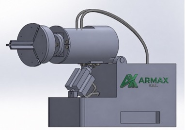
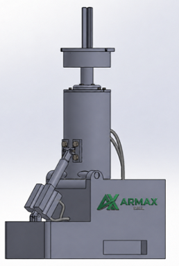

Il sistema integrabile sugli smontagomme Corghi Artiglio 50 e 500 che elimina il sollevamento manuale della ruota. Automazione di precisione, brevetto internazionale, incremento produttività del 20%.


Sistema integrabile sugli smontagomme Corghi della gamma Artiglio 50 e Artiglio 500. Consente di bloccare la ruota direttamente a terra tramite un mandrino autocentrante a 3 griffe e di ruotarla automaticamente di 90° fino alla posizione verticale di lavoro, eliminando ogni sollevamento manuale.
Confronto diretto tra configurazione AS-IS (Artiglio 50 tradizionale) e TO-BE (Artiglio 50 + AMX85). Dati misurati sul campo.
Un sistema progettato per rispondere a una criticità strutturale del processo di sostituzione pneumatici, difficilmente eliminabile con semplici miglioramenti organizzativi.
Ogni fase del ciclo garantisce qualità, sicurezza e conformità normativa nel settore automotive. Componenti metallici ad alta riciclabilità per un fine vita sostenibile.
Corghi con AMX85 raggiunge la massima ergonomia mantenendo un prezzo in linea con la concorrenza diretta. Nessun competitor di fascia equivalente offre un sistema di movimentazione completamente automatizzato.
Posizionamento competitivo: ergonomia vs costo
La crescente diffusione di pneumatici di grandi dimensioni e la maggiore attenzione alla salute e sicurezza degli operatori rendono il beneficio ergonomico di AMX85 sempre più rilevante e difficilmente sostituibile nel lungo periodo.
Armax opera all'interno di Nexion S.p.A., leader mondiale nella progettazione, sviluppo e produzione di attrezzature per la manutenzione e riparazione del settore automotive. Con oltre 70 anni di storia nel mercato aftermarket automotive.
La commercializzazione dell'AMX85 avviene tramite la rete distributiva consolidata di Nexion/Corghi, consentendo ad Armax di accelerare il time-to-market con investimenti contenuti e rischio industriale limitato.
Oltre 350 distributori in 150 Paesi già operativi. Investimenti iniziali contenuti e rischio industriale limitato grazie alla specializzazione sul componente — non sull'intero macchinario.
Un team complementare che copre le funzioni strategiche dell'azienda: dalla visione ingegneristica al go-to-market.
Un modello produttivo snello e sostenibile, con investimenti iniziali contenuti e flussi di cassa positivi già dal primo esercizio. Dati dal Business Plan ufficiale.
* Dati estratti dal Business Plan ARMAX S.r.l. — triennio 2027-2029. I valori intermedi (2028) sono stime interpolate.
Sei un'officina, una concessionaria o un distributore interessato al sistema AMX85? Contattaci per una demo, un preventivo o per approfondire la partnership distributiva.
Partnership strategica con Corghi. L'AMX85 viene integrato sulla linea Artiglio 50 e Artiglio 500 presso il plant Corghi di Correggio (RE) e distribuito globalmente.